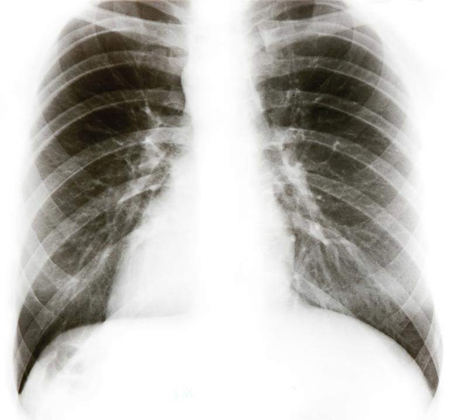

Intro
I hold a Masters Degree in Data Science from UBC, where I built a strong foundation in
statistical analysis, machine learning, and AI-driven solutions.
What I Work On
Computer Vision
From enhancing sensor imagery using domain-specific GANs, I love making machines "see" in
ways
that drive impact.
Natural Language Processing
Fine-tuning transformer models and building context-aware AI to process and generate
human-like text.
Time Series & Predictive Analytics
Turning noisy temporal data into actionable forecasts for industries like finance,
sales and agritech.
What’s Next?
Currently, I'm focused on developing a deeper understanding of reinforcement learning! Looking ahead,
I aim to contribute to AI
applications that can make a real-world imapct.
Beyond Data Science
When I'm not coding, you can find me playing tennis, practicing music or exploring cafes!
Projects

Business Case
Healthcare providers need a fast, accurate, and seamless way to detect pneumonia
in chest X-rays. Manual review is time-consuming and can delay critical care
decisions.
Solution
Developed a deep learning model using a CNN with transfer learning, achieving 94%
accuracy. Deployed as a REST API for easy integration into hospital systems.
Impact
- Reduced diagnosis time from hours to minutes
- API can classify X-rays in seconds
- Dockerized for effortless deployment across various systems
PyTorch
FastAPI
Docker
AWS
Business Case
Finding specific information in a PDF can be tedious. This project enables users
to query a document and receive relevant answers instantly.
Solution
Implemented a Retrieval-Augmented Generation (RAG) system that chunks the
document, stores embeddings in a vector database, and retrieves context-specific
answers using an LLM. The interaction between the LLM and retrieved content is
orchestrated via LangChain, with a user-friendly interface built in Streamlit.
Impact
- Users can quickly query PDFs via an intuitive Streamlit UI
- Minimized LLM hallucinations by providing precise contextual retrieval
RAG
LLM
NLP
Business Case
Finding high-quality recommendations on Reddit can be overwhelming, as users
often need to browse multiple subreddits and sift through extensive comment
threads. A centralized, curated recommendation system would simplify this
process.
Solution
Leveraged an LLM to augment user queries before passing them to the Reddit API
for retrieving the most relevant responses. A secondary LLM then filters and
curates the best recommendations, providing them alongside their original
sources. The API is built with FastAPI and served using Uvicorn. Additionally, a
BERT model analyzes sentiment for each comment.
Impact
- Users receive high-quality, curated Reddit recommendations within seconds
- Sentiment analysis enhances result ranking
FastAPI
LLM
NLP